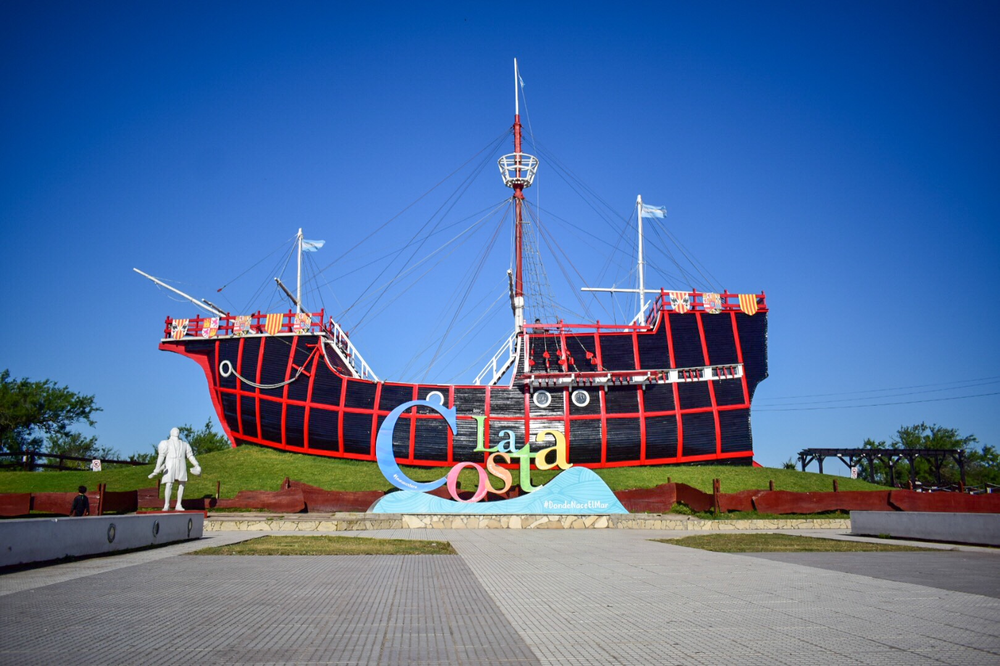
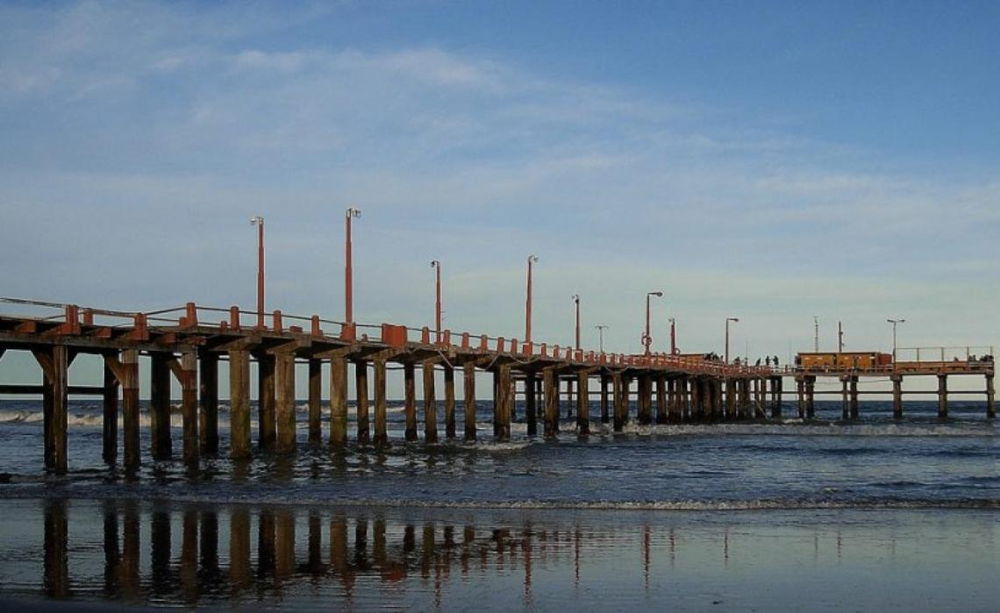
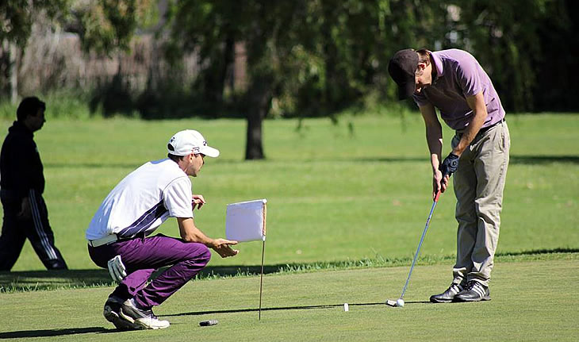
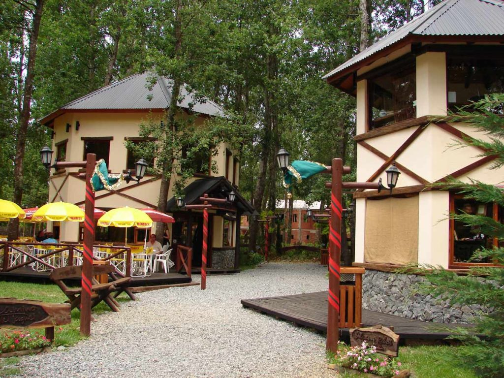

La localidad ha nacido y crecido con un fin turístico entorno al clima templado oceánico y a sus playas
Fue fundada el 3 de marzo de 1946 por el abogado y contador Lázaro Freidenberg. Se puede considerar que la característica más identificatoria de la ciudad es su costanera arbolada con pasarelas de madera, entre la Avenida Costanera y la playa propiamente dicha.

En la Avenida Costanera se ha instalado una réplica casi exacta de la Carabela Santa María, en la que navegara Colón allá por el 1492.
Esta nave está construida con madera de quebracho y la estructura externa es de Palmera de Urunday. Tiene una dimensión de 23 metros de largo, una altura aproximada de 7 metros y un ancho de 9 metros. Existe otra reproducción de este estilo en la ciudad de Barcelona, España.

Se trata de una construcción del año 1948, realizado originalmente con la madera conocida como "Curapay Paraguayo", de gran resistencia para las inclemencias del tiempo y el agua.
Luego, hacia el año 1972 un fuerte temporal destruyó casi completamente el muelle y fue reconstruido en hormigón armado, tal cual podemos apreciarlo hoy en día.

Hay algunos hitos que representan invalorablemente a Santa Teresita, uno de ellos es el Golf Club.
Proyectado en la década del 50 y finalmente inaugurado hacia el año 1959, cuenta con 18 hoyos y está protegido de los embates del viento por un frondoso murallón de vegetación.
Lo característico de este campo es su condición de freeway y allí se llevan a cabo importantes torneos provinciales.

El Jagüel del Medio se encuentra muy cerca... ubicado dentro del predio del Golf, es un pequeño monte que marca la diferencia con la llanura circundante. Esta zona lleva la vertiente de una ciénaga que la rodea y la cual supo ser abastecedora de agua para los habitantes del lugar
El mismo cuenta con un paseo turistico lleno de comercios y atracciones